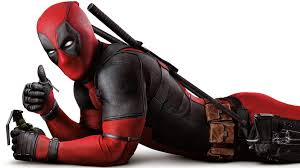

TRAMA 
Como un mercenario mentalmente inestable y desfigurado, Deadpool apareció originalmente como un villano en el cómic New Mutants, y más tarde en ediciones de X-Force. Desde entonces, el personaje ha protagonizado varias series en curso, y ha compartido títulos con otros personajes, como Cable. Conocido como el "Mercenario Bocón" ("Merc with a Mouth" en inglés; "Mercenario Bocazas" en España), es famoso por su naturaleza comunicativa y por su tendencia a romper la cuarta pared, un recurso utilizado por los escritores para un efecto humorístico. Deadpool se puede clasificar como un antihéroe del tipo mercenario: «es el mejor ejemplo de antihéroe mercenario de todo el elenco de personajes de Marvel. Es discutible si Deadpool es el más popular de los antihéroes de Marvel, pero lo que nadie discute es que es el más estrambótico, bocazas y políticamente incorrecto»